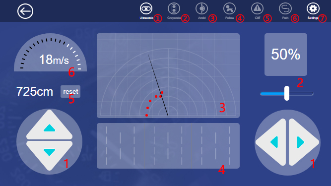

Über den Raspberry Pi AUto
PiCar-4WD Kit
Fernsteuerung - Anleitung
- Verbinden sie mit ihrem Handy mit das Netzwerk BBS-ALFELD-LAB.
- Eine Anmeldung ist nicht erforderlich, du kannst direkt den Webbrowser öffnen.
- Geben sie die folgende Adresse ein:
- "10.10.1.85" - Um das Raspberry Pi Auto Higgs fernzusteuern
Weboberflaeche
Jetzt können sie das Raspberry Pi Auto über die Weboberfläche fernsteuern
1. Pfeil buttons: Um zu rotieren und um zu fahren.
2. Power regulator
3. Hindernismonitor: Überprüfung des Hindernisses vor Ihnen innerhalb von 35 cm und 180°. Ein roter Punkt zeigt an, dass vor Ihnen ein Hindernis vom Ultraschallmodul erkannt wird.
4. Graustufenmonitor: Zeigt den Farbzustand der erkannten Oberfläche an. Wenn das Modul die schwarzen Linien und dann die Klippe erkennt, werden die verschiedenen Farben auf dem Monitor angezeigt.
5. Kilometerstand
6. Geschwindigkeitsmonitor
① Ultraschall: Ein-/Ausschalten des Hindernismonitors und der Ultraschallmessfunktion.
② Graustufen: Ein-/Ausschalten des Graustufenmonitors und der Zeilenfolgefunktion.
③ Vermeiden: Durch Ein-/Ausschalten der Hindernisvermeidungsfunktion kann das Auto die Hindernisse automatisch umfahren oder nicht.
④ Folgen: Durch Ein-/Ausschalten der Linienverfolgungsfunktion kann das Auto den Objekten vor ihm folgen oder nicht.
⑤ Cliff: Kantenerkennung ein-/ausschalten. Das Auto zieht sich zurück, sobald es die Klippe erkennt oder nicht. Wenn das Auto den Effekt nicht erkennt, passen Sie bitte den Schwellenwert auf der Einstellungsseite an.
⑥ Pfad: Zum Ein-/Ausschalten der Zeilenverfolgungsfunktion. Sobald Sie die Linienverfolgungsfunktion starten, fährt das Auto entlang der schwarzen Linien auf dem Boden.Wenn nicht, passen Sie bitte den Schwellenwert auf der Einstellungsseite an.
⑦ Einstellung: Sie können die Einstellungsseite aufrufen, indem Sie darauf klicken.